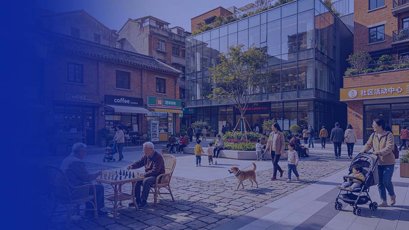
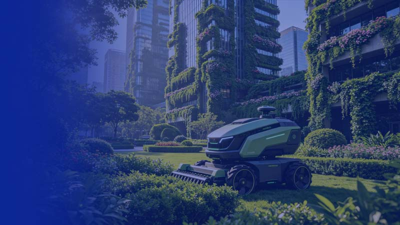
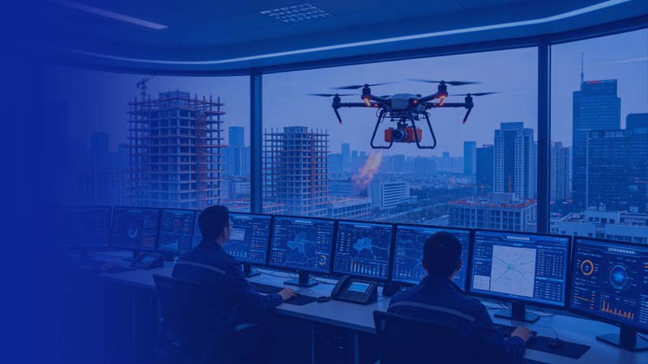
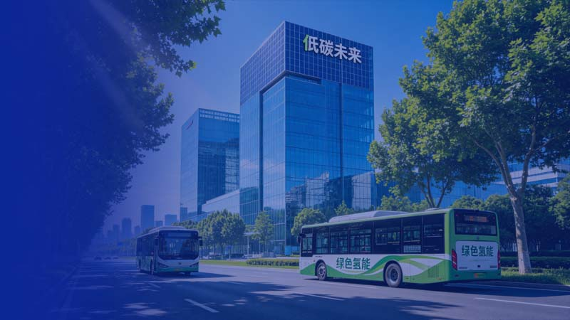
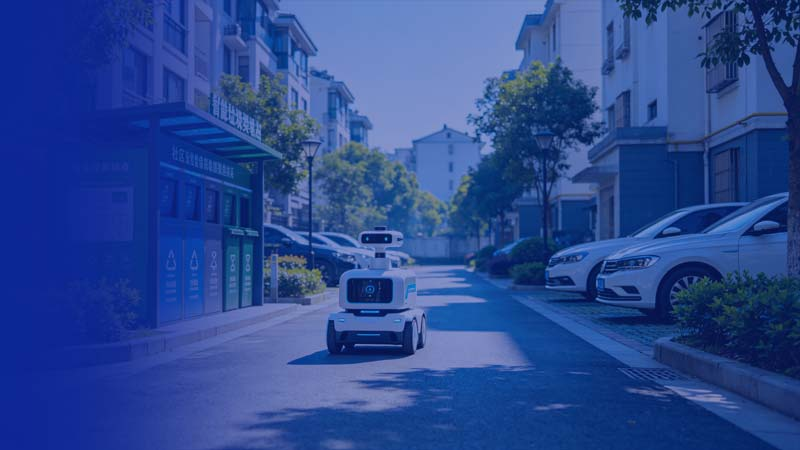

上海城市治理青年人才创新大赛
各相关单位：
为全面贯彻落实党的二十大精神和习近平总书记考察上海重要讲话精神，进一步提升上海建设交通行业人才工作水平，市建设交通工作党委面向本市城市治理领域青年英才，组织举办 2026“城市之星—上海城市治理青年人才创新大赛”(以下简称“大赛”),主要围绕上海人民城市建设、超大城市治理等任务要求，大力推进制度创新、技术创新、管理创新和服务创新，发现和培养一批城市治理青年英才，挖掘和储备一批城市治理创新项目。现将有关事项通知如下:
本市行政区域内具有独立法人资格的企事业单位、社会组织等机构中从事城市治理相关工作的在职人员，年龄一般在45周岁以下，在城市治理某一专业领域具有扎实的专业理论基础或实践能力并取得一定成绩，具有较好的发展潜质，每人可选择一个赛道参赛。
（一）赛道分布
大赛设 8 个分赛道，每个分赛道由相关单位承办，融合资源、整合力量、聚合智慧，突出主管部门引导、系统支持和行业参与相结合，构建引导协调、系统和行业单位承办协办、企事业单位和行业人才广泛参与的运行机制。
（二）大赛形式
综合采用 TED 演讲、项目路演、论坛、辩论等方式开展创新大赛，围绕各赛道主题，采用选手讲演、专家点评、综合排名方式开展比赛。
（三）决赛安排
组织各分赛道一等奖选手参加总决赛，最终决出大赛金、银、铜奖若干名。
各类申报人选经所在单位审核确认后，通过“海聚英才云 ”人才服务数字平台进行统一申报 ( 登录地址：https://shrctcpt.sh-italent.cn/declare/#/)，每个法人单位在各分赛道申报不超过 2 名。各集团加强对所属子公司申报人员的统筹把关。组委会对所推报材料进行审核后，产生符合条件的候选人名单。
由分赛道组委会按照比赛要求对报名人选进行初选审核，重点对报名人选基本条件、发展潜力、创新项目等进行综合考量，选出比赛正式候选人。
由各分赛道组委会举行分赛道比赛，评选出各分赛道一等奖、二等奖、三等奖和优胜奖各若干名。各分赛道获得一等奖的选手可参加总决赛，最终决出创新大赛金、银、铜奖若干名。
所有参赛获奖青年可申请加入上海建设交通青年人才协会。加大在参赛获奖青年中发展党员、推荐代表、选拔干部等工作力度，优先推荐参赛获奖青年参与各类先进荣誉及奖项评选。
优先推荐参赛青年参加各类高级研修班等重点培训项目。优先推荐参赛获奖青年进入行业各院士或大师专家工作室开展带教培养。所有参赛获奖青年展示的项目或方案纳入大赛项目库，优先供相关主管部门参考，作为重点项目予以支持。
在大赛总决赛中表现突出的青年可直接入选东方英才计划城市治理领域青年项目终评。在各分赛道中表现优异的青年人才及项目，择优推荐参加“海聚英才”全球创新创业大赛复赛和上海（长三角）中青年工程师创新创业大赛并享受相关政策支持。
所有参赛获奖青年人才可享受落户直通车（居住证、落户）、行业职称申报优先推荐、市区两级人才公寓优先申请入住等综合配套服务。
发挥大赛组委会统一领导作用，加强各分赛道比赛部署和指导，各分赛道承办单位要精心筹划、严密组织，高质量完成比赛活动。积极开展大赛宣传活动，加大线上、线下各类媒介推送力度，加强政策解读、比赛推广和人才宣传，确保大赛有序、平稳、安全进行。
将大赛相关活动纳入行业各级团委“号、手、队、岗、赛”五位一体的岗位建功青春行动，增强通过比赛选拔优秀人才、树立先进典型的工作意识，以大赛为平台和抓手，充分挖掘选拔一批优秀人才、树立一批行业典型、储备一批创新项目。
把大赛打造成面向行业青年人才长期开展的特色品牌活动，将赛事选拔与人才培养相结合，为青年人才提供一揽子培养政策和举措，建立长期跟踪培养和管理机制，助力青年人才成长发展。

主要内容：聚焦深化城市更新行动，全面践行人民城市理念，加快转变超大城市发展方式，优化空间布局、改善人居环境、增强安全韧性、激发城市活力，促进城市内涵式发展和品质提升。
主要内容：聚焦加快建设全球领先的国际航运中心，巩固提升辐射全球的海空枢纽港地位，深化区域港航合作，高水平推进国际航空枢纽建设，推进交通领域数字化、智能化、绿色化转型。
主要内容：聚焦城市水安全、水生态、水资源、水环境和海洋综合管理，着力构建安全韧性、优质集约、绿色低碳、智慧高效的现代水系统治理体系，推进现代海洋城市建设，不断提升行业智能化、绿色化、融合化发展水平。

主要内容：聚焦人工智能赋能绿化市容智慧管理，推进绿色技术革新与循环经济发展，强化生态韧性构建与碳汇评估转化，深化共建共治推动绿容治理现代化，持续提升生态环境品质与行业服务能级。
主要内容：聚焦人工智能在建设领域的应用，推进数字盾构、智慧运营、建筑机器人、数字化建造技术及智慧工地建设。加强高技能人才选育，培养储备“建交工匠”。

主要内容：聚焦城市安全风险、工程安全质量、防灾减灾等，推进海绵城市、城市基础设施生命线安全工程和城市运行保障应急管理体系建设，增强城市运行安全保障和抗风险能力，加快建设宜居、韧性、智慧城市。

主要内容：聚焦绿色低碳发展理念，推进超低能耗建筑、可再生能源建筑一体化、储能、建筑高效电气化替代等关键技术创新和规模化应用。推进低碳零碳负碳核心技术攻关和基础研究。

主要内容：按照城市管理应该像绣花一样精细的要求，聚焦城市精细化管理、物业治理、城管执法等领域，加强统筹协调、服务管理和管执联动，提升超大城市管理科学化、精细化、智能化、法治化水平。